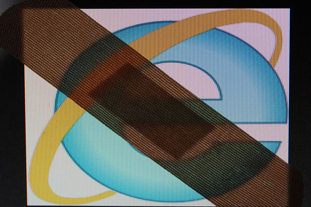
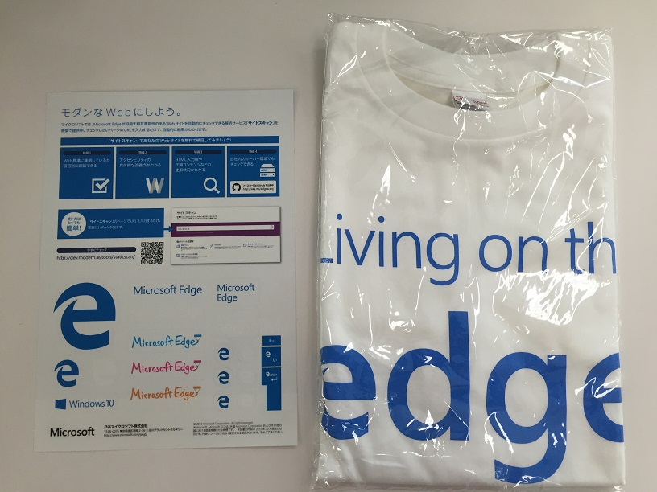
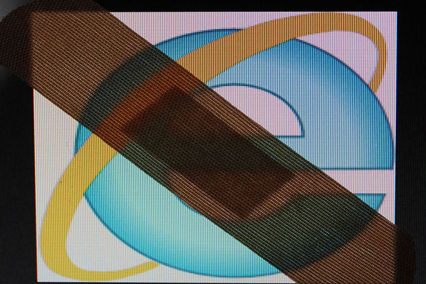
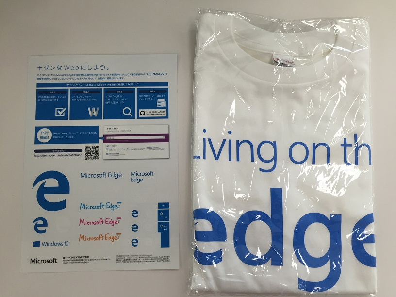

autoscale: true
IE8 追悼枠
マイクロソフト「ＩＥ」安全対策 最新版のみに NHKニュース
「パッチ」と呼ばれるばんそうこうのような修正プログラムを作り、無料で配布しています。
このため、マイクロソフトは、これまでの態勢で安全対策を続けるのは難しくなったとして、「パッチ」の作成を最新版だけに絞り、古いバージョンの安全対策は１２日で終了することになりました。

IE8サポート終了
^ 2016年1月13日に終了

IE8とお別れ

autoscale: true
「パッチ」と呼ばれるばんそうこうのような修正プログラムを作り、無料で配布しています。
このため、マイクロソフトは、これまでの態勢で安全対策を続けるのは難しくなったとして、「パッチ」の作成を最新版だけに絞り、古いバージョンの安全対策は１２日で終了することになりました。

^ 2016年1月13日に終了
